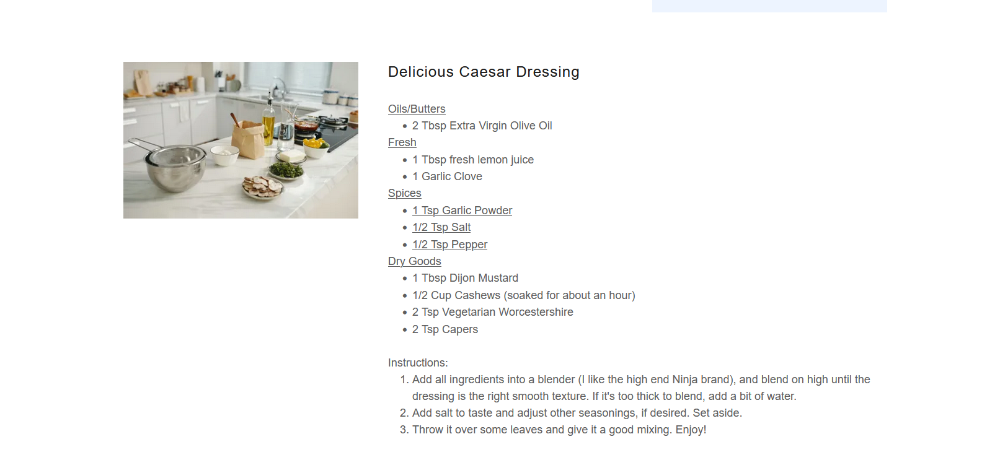

Appetizers
Delicious Caesar Dressing
A creamy vegetarian Caesar-style dressing with cashews, capers, lemon, garlic, and Dijon.
Ingredients
Base
- ½ cup cashews, soaked about 1 hour
- 2 tbsp extra-virgin olive oil
- 1 tbsp fresh lemon juice
- 1 tbsp Dijon mustard
- 2 tsp vegetarian Worcestershire
- 2 tsp capers
Seasoning
- 1 garlic clove
- 1 tsp garlic powder
- ½ tsp salt
- ½ tsp black pepper
Instructions
1
Blend
Add all ingredients to a blender and blend on high until completely smooth.
2
Adjust texture
If the dressing is too thick to blend or pour, add water a little at a time until it reaches a smooth dressing texture.
3
Season
Taste and adjust salt, lemon, pepper, or other seasonings as desired.
4
Serve
Toss with greens and mix well, or use as a dip.
Notes
- Soaked cashews make the dressing smoother.